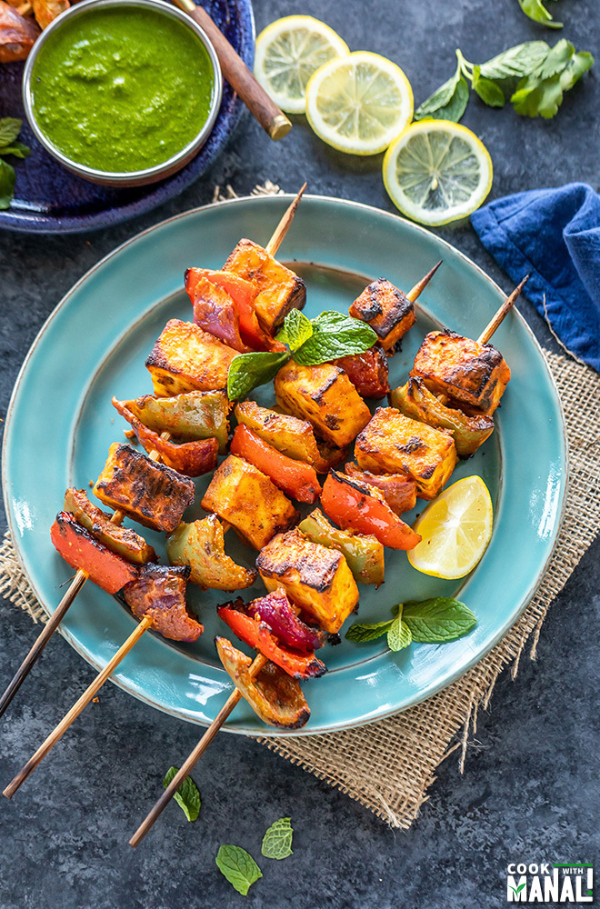

Paneer is a type of fresh cheese also called as cottage cheese. Paneer is marinated with curd along with ginger garlic paste and spice powders then shallow fried until golden and crisp. Paneer Fry is one of the popular indian starters in restaurants. Apart from Chilli Paneer, Paneer 65, Paneer Nuggets this Paneer Fry is quick and easy to make but still tastes so good. Paneer Fry is a perfect starter or appetizer that the family comes for more for its taste. Making this Paneer Fry does not require many ingredients it just needs few and just 20 mins yes its so quick. You can serve it as a starter or appetizer or make it as a filling for sandwiches and rolls / wraps.
Tikka basically means anything that is marinated and then baked or grilled or fried and paneer tikka is a popular vegetarian tikka dish. This tasty homemade version is similar to the dish served in restaurants, but I would say actually tastes better!The Indian spice powders mixed with the yogurt (curd) make a flavorful marinade that is soaked up by the porous paneer cubes. Grilling the skewers then produces a nice slightly crispiness on the paneer.
